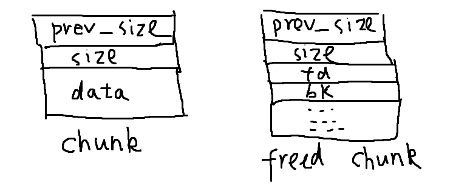
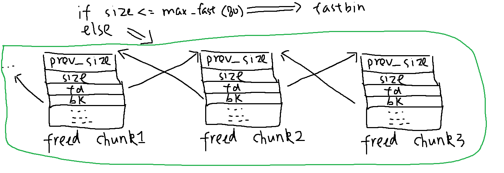
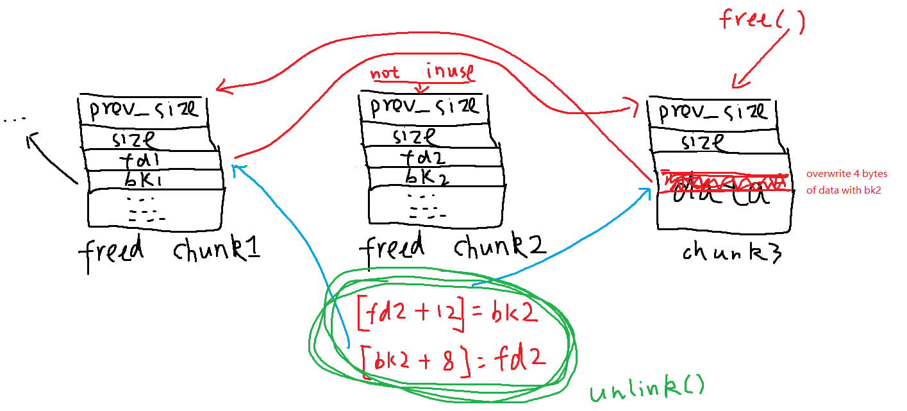

Protostar_Heap3
Chunk

Chunk List (double linked list)

Free(*(chunk3+8))

Assuming that chunk2 is next to chunk3 (on its left), and chunk4 is next to chunk3 (on its right) the function free()
- checks if chunk2 is in use (by the last bit of chunk3->size)
- if not
- chunk2_ptr = chunk3_ptr - prev_size
- unlink(chunk2_ptr,bck,fwd) <-- a macro (after unlink, chunk2 is consolidated with chunk1)
- checks if chunk4 is in use (by the last bit of chunk5->size)
- if not
- chunk4_ptr = chunk3 + size
- unlink(chunk4_ptr,bck,fwd)
If neither chunk2 nor chunk4 is free, then put chunk3 straight to the Chunk list by setting chunk3_ptr->bk = list[0] and chunk3_ptr->fd = list[1]
The exploit is unlink()